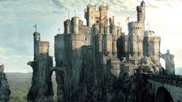

Começo do projeto:Esse projeto consiste em uma pequena aventura onde seu personagem se perde em uma viagem pela floresta e que logo encontra um misterioso caminho que não mostrava no seu mapa e leva vc para um castelo que por algun motivo estranho não há ninguem dentro dele.
Movido pela curiosidade e cansaso,você decide entrar no castelo,porem assim que seu personagem entra,as portas principais do castelo se fecharam misteriosamente e agora você esta preso dentro de um grande castelo.
Agora seu objetivo é encontrar uma saida desse castelo que por algun motivo parece não ter fim,encontrando pistas, documentos sobre a história do castelo e entradas secretas..
Castelo salão Grande Corredor Principal